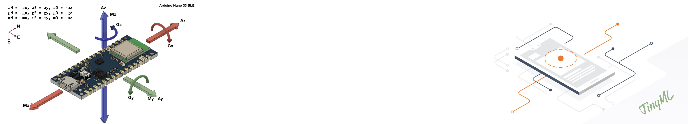
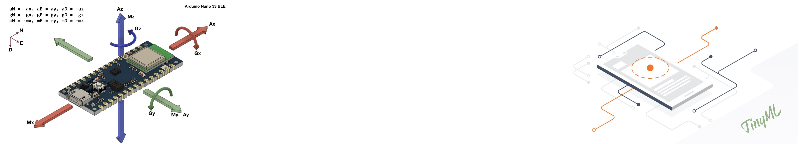

Imagine using computer vision on a device the size of your thumb! Tiny Machine Learning (TinyML) for Computer Vision unlocks this exciting potential, enabling intelligent applications at the edge, from wearables to smart sensors. This course is your launchpad into this cutting-edge field. Whether you're a machine learning enthusiast or an embedded systems developer, ou'll delve into the unique challenges and techniques of running vision models on resource-constrained devices. Learn how to compress models, optimize algorithms, and deploy them on microcontrollers. Discover real-world applications like anomaly detection, object recognition, and gesture control. Master practical skills with hands-on projects using popular TinyML frameworks. Don't just imagine - build the intelligent edge with TinyML for Computer Vision!
- TinyML Foundation: https://www.tinyml.org/
- TinyML for Beginners : http://tinyml.seas.harvard.edu/courses/
- TensorFlow Lite for Microcontrollers: https://www.tensorflow.org/lite/microcontrollers
- Arduino TinyML Library: https://docs.arduino.cc/tutorials/nano-33-ble-sense/get-started-with-machine-learning
- TinyML YouTube Channel: https://www.youtube.com/tinyML